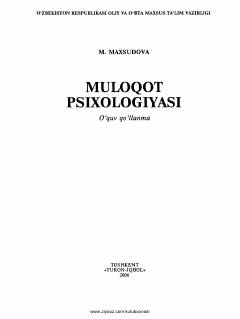

MPMuloqot madaniyati va psixologiyasini o'rgatuvchi amaliy qo'llanma.
Ushbu o'quv qo'llanma muloqot psixologiyasining predmeti, shakllari, vositalari va turli yoshdagi bolalarning muloqot xususiyatlarini o'rganishga bag'ishlangan. Pedagogika-psixologiya yo'nalishi talabalari, kasb-hunar kolleji o'quvchilari, pedagog va psixologlar uchun mo'ljallangan. Qo'llanmada pedagogik muloqot usullari, ijtimoiy-psixologik trening va muloqot sifatlarini shakllantirish omillari ham yoritilgan.